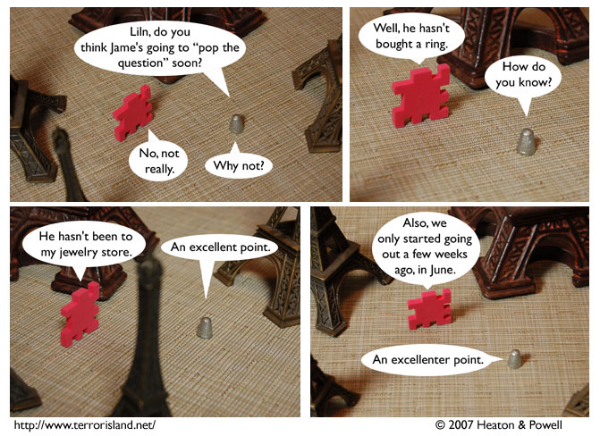

Strip #93
— Monday, January 15, 2007
They aren’t in France. Geography City has its own Eiffel Tower(s).
Notes, Thoughts, &c.
Ben’s Notes
We first thought of this strip idea during Comic-Con 2006. It was the reason that we put “professional jeweler” in Liln’s description on the dramatis personae page.
Also, this strip is dedicated to Eric and Wednesday Websnark, who recently got engaged. May their lives be free of evil demons.
Lewis’s Notes
Lewis’s comments are the X such that the degree funny of Lewis’s Comments equals six times the degree funny of Ben’s comments.
Solve for X.